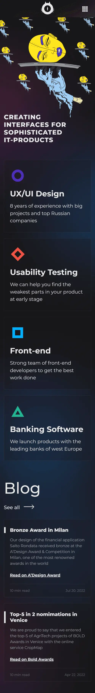

Gabriel Ferrin
HOME
SITE PLAN
CHAMBER
BYU-IDAHO
SCRIPTURE
WDD 230: Web Frontend Development
uxpert
Contrast |
Dark gray, orange and white are a pleasant contrast and makes it easy to read texts.
opium
Alignment |
The user can notice the predominant left alignment of text and other elements throughout most of the page.

suparise
White Space and Clean Design |
Minimalistic images, pleasant font family, and effective use of white spaces makes it pleasant to go through the content.